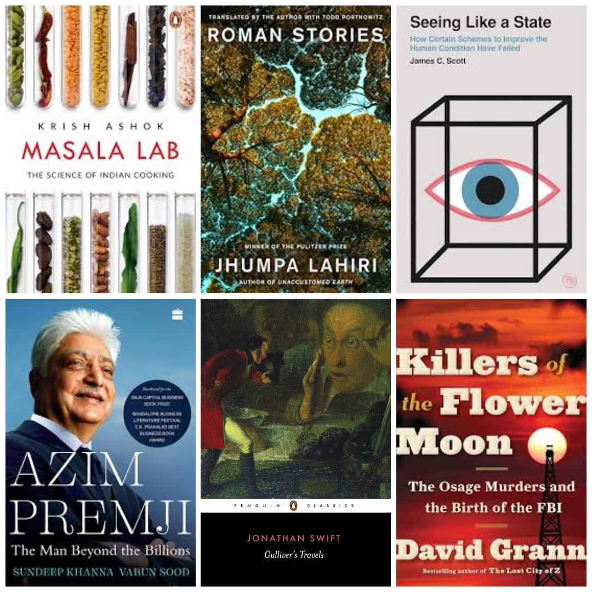

Books I read in 2024
“I am not the same person I was one book ago” - heard on an Amit Varma podcast

Killers of the Flower Moon
I went to watch the theatrical release of the Martin Scorsese film by the same name, but missed the first few minutes. I picked up the book with the intention of catching up on the lost minutes, only to finish the entire book in three days (which is fast for my standards). I would recommend the book over the movie because I like its narrative better. Many mysterious events take place, the reasons for which get revealed through a long investigation in the book. In the movie though, the culprits are known from the beginning.
The plot of the movie revolves around a native American tribe that was forced to resettle multiple times. The tribe is finally given a ‘worthless’ piece of land, and rights to all the resources on it. The tribe members become super-rich overnight because the ‘worthless’ land happens to have oil reserves, which drilling companies are willing to pay a fortune for. The book poignantly reveals how elaborate schemes were hatched by non-tribals to get hold of this tribe’s fortunes.
The book made me think that something is amiss when we apply utilitarian principles to resettle a population that doesn’t operate according to ‘modern’ society’s norms. It was also interesting to see the stark difference in the way tribals treated money compared to non-tribals.
Azim Premji: The Man Beyond the Billions
Mr. Premji had a tradition of visiting APU’s Sompura campus once a year to do unstructured Q&A with the students. If I had read his biography back then, I would have had questions for him too. Here are my takeaways from the book. Mr. Premji was born in 1945, and has seen independent India through all political regimes. With the benefit of hindsight, he has taken genius decisions as a business head in times of uncertainty. The story of Mr. Premji pivoting the company from an edible oil manufacturer to an IT giant is fascinating. The other decision that was equally important was uprooting himself from Bombay and relocating to Bangalore. The book has endearing stories that bring out Mr. Premji’s ethics and principles in business, his frugality and simplicity, his love for streetfood, and no wastage culture.
The book also brings out how Mr. Premji’s philanthropic activity is sustained. The newspapers only mention the generous sum of money he parted with, as a one-time transfer. What’s more interesting is that an entity called Premji Invest actively manages this multi-thousand-crore portfolio, and uses the portfolio growth to fund the Azim Premji Foundation and the universities. Today the fund’s growth does not depend on Wipro’s performance. In a way, the growth of hundreds of firms is supporting scholarships at APU and funding NGOs through the foundation- wonders of modern finance!
Masala Lab
Krish Ashok’s book is written with the aim to ditch the recipe book while cooking. It approaches cooking from first principles, by explaining useful chemistry/food-science, and then by zooming out to recognize patterns. You will enjoy this book if you are someone who modifies dinner plans based on what’s available in the fridge that evening (authentic recipes are overrated after all). The book made me appreciate the Maillard reaction, introduced me to umami, and made me spend lesser time on lengthy marinades.
Here is my favourite anonymous quote, the opening lines from chapter 7 of this book:
Knowledge is knowing tomato is a fruit, wisdom is not putting it in a fruit salad, and philosophy is wondering if ketchup is a smoothie.
Roman Stories; Interpreter of Maladies
Though the two collections of short stories from Jhumpa Lahiri are very different, I could connect with them on the theme of ‘foreignness’. Many characters from Interpreter of Maladies are people of south-asian origin living in the United States. The stories bring out how these characters deal with their habits, culture and identity in a foreign land. The piazzas, trattorias and other uniquely Italian things give the reader a perfect sense of Roman Stories’ setting. Here, readers can appreciate the complexity of Lahiri’s characters and almost see things through their lens. If you like short stories, both of these books are easy to recommend.
Gulliver’s Travels
After reading many ebooks, I longed to read from a physical copy. My visits to multiple bookstores in Milan revealed a pattern. They all had one shelf of English books, split between bestsellers (think airport books) and classics. I chose from the latter and came out with Jonathan Swift’s book.
Set in early-eighteenth century, Swift uses Gulliver’s visits to four fictional lands to highlight socio-political issues of his time. This is done sometimes while he casually describes the far-fetched norms of the fictional lands. For instance, Tramecksan and Slamecksan are two rival parties who differentiate by having high/low heels on their shoes- made me think about the dividing lines today. I found references to slavery and the Atlantic trade, different access to education for men and women, and lack of upward mobility for groups of populations- all important issues of Swift’s day. I even saw hints of distopian planning when Swift shows attempts of top-down language creation in Laputa:
The other Project was a Scheme for entirely abolishing all Words whatsoever; and this was urged as a great Advantage in point of Health as well as Brevity. For, it is plain, that every Word we speak is in some Degree a Diminution of our Lungs by Corrosion, and consequently contributes to the shortening of our Lives.
This book has stood the test of time because readers can see references to problems, old and contemporary, in an otherwise simple prose.
Seeing Like a State
The subtitle of James C. Scott’s book is the essence of what he wants to demonstrate: “How Certain Schemes to Improve the Human Condition Have Failed”. Scott establishes that legibility is the central problem in statecraft. Whether it is to tax people or to provide piped water, legible societies are more malleable from the centre, for better or worse. He shows how this legibility comes at a cost. ‘Heroic simplifications’ are made to exceptionally complex phenomenon (local land tenure customs/ natural forests) to put these on a standard grid. Moreover, the reduced dimensions of the multi-dimensional phenomenon are only those that interest the official observers. When society is reshaped along these limited dimensions using the coercive power of the state, it is recipe for disaster. The other elements that add to the disaster are high-modernist ideology that retreats to miniaturization, and a civil society that doesn’t resist.
Chapter 4 is my favourite, where Scott compares Le Corbusier with Jane Jacobs to show everything that is wrong with the centrally planned city. It highlights how planners like to start from scratch, on an uninhabited flat plane. It shows how the plans for St. Petersburg were made within two weeks in a hotel room in Chicago- a plan deprived of context. And most importantly, the city only makes sense from a bird’s eye view; not for the people walking on its streets.
Besides showing the hubris of planners and the lack of agency of the people in plans, Scott discusses metis. He makes the case for the role of practical knowledge, informal processes, and improvisation in the face of unpredictability. I highly recommend this book.